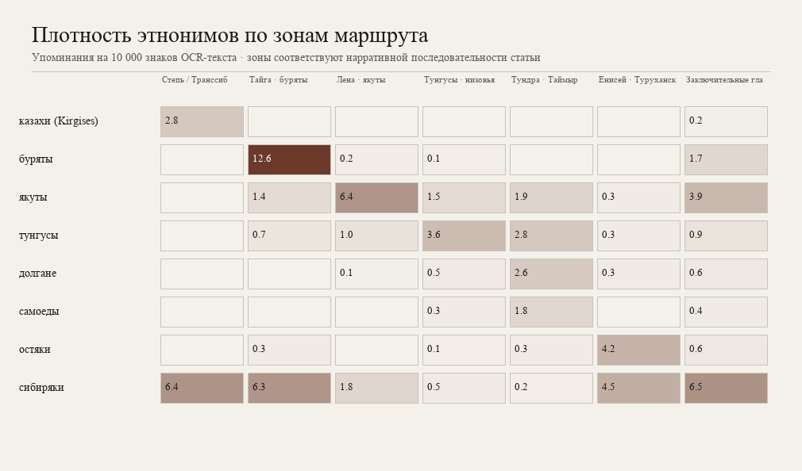

Три способа смотреть одни данные: шаги маршрута (столбцы), траектории по зонам (линии) и тепловая карта. Единица — плотность на 10 000 знаков OCR-текста.
Плотность этнонимов в выбранной зоне (удобнее тепловой карты: длина полосы = величина).
Выберите участок пути сверху. Полосы показывают, кого текст «держит» в фокусе на этом отрезке. Сравните со степью → тайгой → Леной: пики должны смещаться.
Это не демография Сибири, а внимание нарратива. OCR + regex — эвристика.
Включите этнонимы — линии покажут, где плотность растёт и падает вдоль книги. Наведите на точку.
Ось X — зоны маршрута (не географическое расстояние). Ось Y — плотность на 10k знаков.
Та же матрица «этноним × зона». Темнее ячейка — выше плотность. Удобно для обзора; для устной подачи лучше вкладка «По маршруту».

Файл: assets/charts/ethnonym_zones.png · пересчёт: ./scripts/run_all.sh